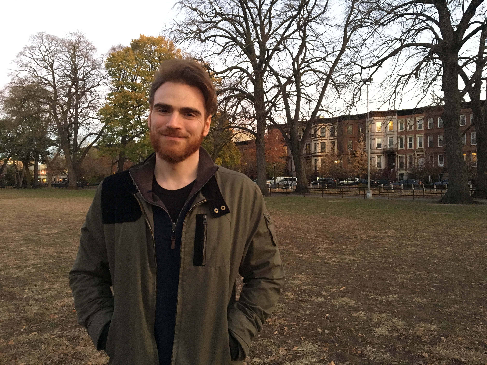

Update: Starting in July, I will be joining Memorial Sloan Kettering as a Principal Investigator of Computational Oncology in the Department of Epidemiology and Biostatistics!
I am a postdoc at Columbia University and Columbia University Medical Center in New York. I work with David Blei and Chris Wiggins at the Data Science Institute, and Raul Rabadan in the Program for Mathematical Genomics in Systems Biology. My work is focused on statistical methods and applications for cancer genomics.
Before joining Columbia, I was a Computer Science PhD student at UT Austin working with James Scott. My PhD focused on machine learning methods with health and wellness applications, particularly those involving graphical models, Bayesian statistics, and scalable inference algorithms. I worked on projects ranging from obesity and nutrition modeling to wearable fitness devices and large-scale multiple hypothesis testing for fMRI studies.
In a previous life, I was a software engineering researcher working with Eli Tilevich at Virginia Tech, where I got my BS and MS in Computer Science. My Master's thesis focused on inference techniques that learn transformation rules to automatically upgrade legacy applications to use the latest version of a given API. I've also co-founded a couple of startups and was a quant at a hedge fund.